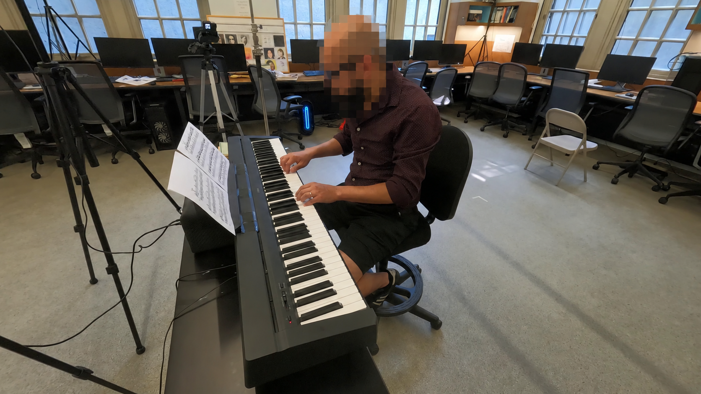
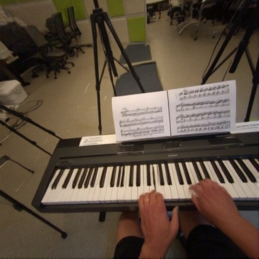
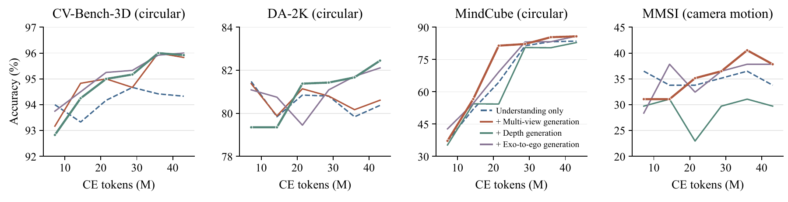
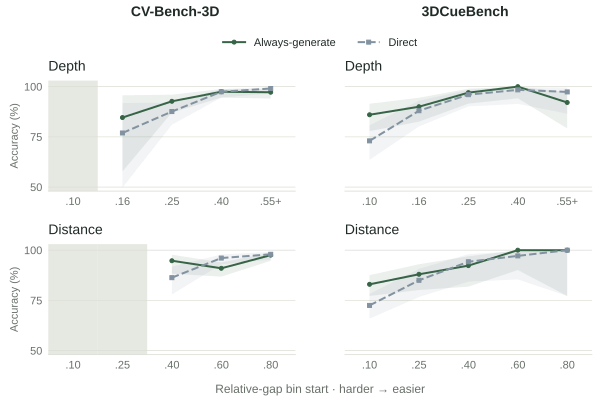
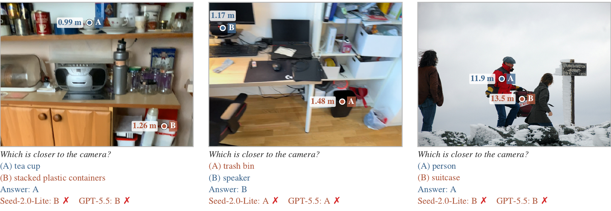

A DURING TRAINING
Geometric Co-training
Co-training with geometric generation improves spatial skills. Which task helps depends on the skill being tested.
Spatial understanding+Geometric generation
How Generation Helps Spatial Understanding
† Corresponding authors

GeoUG task configurations · Two-view fusion is illustrative, with estimated ego intrinsics and residual misalignment.
Two ways to use generation: geometric supervision during training, and geometric evidence during inference.
Co-training with geometric generation improves spatial skills. Which task helps depends on the skill being tested.
Draft an answer. Generate depth when it is useful. Measure, then confirm or revise.
GeoUG combines spatial understanding and geometric generation in one multimodal framework. The instruction specifies what to answer or generate.
Ask a spatial question,
request depth, or specify a viewpoint.
Understanding
+
Generation
Answer questions about the scene.

New camera view or first-person view.
Depth in metres, enabled by MMDC.
How can an image generator produce depth in metres?
The Multi-scale Metric Depth Codec fits metric depth into the three channels of an RGB VAE—with no learned codec parameters and no architecture changes.
First encode depth. Then watch generation and decoding as one continuous animation.
Fixed pivots: c₁ = 2 m, c₂ = 8 m, c₃ = 32 m. Each channel covers a different depth scale; fusion favors channels away from saturation.
| Model | NYU-v2 | KITTI | ETH3D | Sintel | DIODE |
|---|---|---|---|---|---|
| ZoeDepth | 4.76 / 97.30 | 5.59 / 95.10 | 7.27 / 94.20 | 21.80 / 69.20 | 7.80 / 90.90 |
| Depth Anything V2 | 4.16 / 97.90 | 6.77 / 94.30 | 4.63 / 97.20 | 17.10 / 76.60 | 5.41 / 94.60 |
| Metric3D V2 | 3.94 / 97.60 | 3.50 / 98.40 | 3.24 / 99.00 | 26.60 / 71.70 | 2.75 / 98.70 |
| UniDepth V2 | 2.96 / 98.60 | 3.85 / 98.10 | 2.95 / 98.50 | 13.30 / 83.20 | 4.05 / 96.50 |
| Depth Pro | 3.67 / 98.20 | 5.12 / 96.80 | 4.97 / 96.40 | 15.80 / 80.10 | 4.66 / 95.60 |
| MoGe-V2 | 2.89 / 98.60 | 3.75 / 98.10 | 2.80 / 99.10 | 13.30 / 82.50 | 3.14 / 97.40 |
| Marigold-v1.1 | 5.50 / 96.40 | 10.50 / 90.20 | 6.90 / 95.70 | 29.80 / 78.20 | — / — |
| Lotus | 5.40 / 96.80 | 8.50 / 92.20 | 5.90 / 97.00 | — / — | 9.80 / 92.40 |
| GeoUG-Depth (ours) | 3.32 / 98.46 | 4.84 / 97.27 | 3.75 / 97.85 | 14.72 / 79.65 | 4.50 / 96.22 |
GeoUG-Depth uses MMDC with expanded training data. “—” indicates an unreported result. Affine-aligned scores evaluate depth shape, not absolute metric-scale accuracy.
| Encoding | Average | NYU-v2 | KITTI | ETH3D | Sintel | DIODE |
|---|---|---|---|---|---|---|
| Single-scale (c = 5 m) | 7.47 / 92.20 | 3.35 / 98.40 | 6.61 / 95.22 | 4.76 / 96.66 | 16.68 / 76.77 | 5.96 / 93.96 |
| MMDC (2, 8, 32 m) | 7.24 / 92.57 | 3.35 / 98.38 | 6.51 / 95.34 | 4.62 / 96.99 | 16.31 / 77.23 | 5.40 / 94.88 |
| MMDC + data scaling | 6.23 / 93.89 | 3.32 / 98.46 | 4.84 / 97.27 | 3.75 / 97.85 | 14.72 / 79.65 | 4.50 / 96.22 |
Average is the unweighted mean across five datasets. The final row adds training data and is the GeoUG-Depth model compared above.
From noise to depth, camera-controlled views, and first-person perspectives. These videos show actual sampling runs from the paper’s checkpoints.
A single photograph becomes a metric depth map. Watch the sampling process.
The generated view follows a camera-motion instruction. Ground truth is shown alongside.
Generate a first-person view from a third-person image and a description of the person.
Six comparisons, shown one complete example at a time. View-generation examples include the original BAGEL baseline.
Geometric co-training improves spatial understanding, with gains that depend on the generation task and benchmark.
At the final checkpoints, all three co-training tasks improve CV-Bench-3D-Visual by 1.50–1.67 percentage points. Depth generation gives the largest gain on DA-2K-Visual (+2.08 points); multi-view and exo-to-ego generation improve MindCube by 2.21 and 2.31 points, respectively.

Comparisons are aligned by understanding CE tokens. See the paper for model configurations and evaluation protocols.
GeoUG first drafts an answer, then decides whether generated geometry is worth using to verify it.
Generation helps on hard questions; easy questions can often be answered directly.
When two depths or distances are close, generated geometry provides useful evidence. With a large gap, direct answering is already strong and extra generation adds little.
Use geometric evidence where it helps, and skip it where it is unnecessary.

The draft provides a discriminative context for learning the adaptive generation policy.
First attempt the question. Then learn whether to keep that answer or verify it with generated geometry.
The policy conditions on the image, question, and draft—not the unavailable ground-truth difficulty.
At a 50% generation budget, the draft-conditioned setting retains more of the accuracy gain from always generating.
How it learns: supervised fine-tuning initializes the draft-and-verify format; reinforcement learning rewards correct answers while charging for generation. Decision-specific credit compares generation with keeping the draft.
Which is closer to the pianist’s head: the blue light or the folding chair? Watch the draft, depth generation, measurement, and revision.
Adaptive interleaved reasoning starts with a draft, then selectively generates geometric evidence to verify or revise the answer.
GeoUG skips generation on 27.6–49.7% of questions across these benchmarks. Circular accuracy requires both option orders to be correct.
GeoUG: RL policy with λ = 0.1. Always-generating is slightly more accurate on 3DCueBench and DA-2K; GeoUG uses fewer generation calls.
| Model | CV-Bench-3D | 3DCueBench | DA-2K | Average |
|---|---|---|---|---|
| BAGEL-7B-MoT | 70.4 | 61.6 | 55.1 | 62.4 |
| Qwen2.5-VL-7B | 70.8 | 48.6 | 45.3 | 54.9 |
| Qwen3-VL-8B | 87.1 | 66.8 | 44.6 | 66.2 |
| InternVL3.5-8B | 78.9 | 57.6 | 31.6 | 56.0 |
| SenseNova-SI-1.4-8B | 89.3 | 72.1 | 63.9 | 75.1 |
| SenseNova-SI-1.5-8B | 87.4 | 71.5 | 61.1 | 73.3 |
| VST-7B-SFT | 93.2 | 77.9 | 63.5 | 78.2 |
| DA3 (depth readout) | 95.3 | 90.9 | 92.1 | 92.8 |
| GeoUG (Ours) | 97.9 | 90.8 | 94.2 | 94.3 |
DA3 uses predicted metric depth with the same measurement procedure, without a VLM. Average is the mean of the three overall scores. Consult the paper for referring formats and full setup.
Generated geometry can correct a wrong draft, but selective generation also avoids unnecessary computation—and erroneous measurements can still overturn a correct answer.
Abridged traces from the paper and appendix. Generated depth and top-view point clouds come from the policy’s outputs. Generation probabilities are reported for both option orders; tool measurements are predictions, not ground-truth distances.
Source: paper, reasoning results and Qualitative Results appendix. Point clouds use the measurement tool’s approximate camera intrinsics when calibrated intrinsics are unavailable.
800 spatial questions. Balanced 2D cues. Four difficulty levels.
2D cues are image-plane clues, such as relative position and pixel distance.
Example: assuming “lower in the image” means “closer to the camera.”
On CV-Bench-3D Depth, this rule alone answers 85.3% correctly.
3DCueBench balances both cases across tasks and difficulty levels.
Audit: 600 CV-Bench-3D Depth questions; rule uses bounding-box bottoms. 3DCueBench balances selected cues within each task, source, and difficulty interval.
In these 3DCueBench examples, the higher target point is nearer to the camera. GPT-5.5 and Seed-2.0-Lite both select the farther target. Depth values are ground truth; annotations are added for readers and are not supplied to the models.

GPT-5.5: 93.4% → 35.7% when the cue switches from consistent to conflicting.
| Model | Overall | Cue-consistent | Cue-conflicting | Agreement with 2D rule |
|---|---|---|---|---|
| GPT-5.5 | 64.6 | 93.4 | 35.7 | 78.8 |
| Seed-2.0-Lite | 64.5 | 92.0 | 37.0 | 77.5 |
GPT-5.5 version: gpt-5.5-2026-04-24. Twelve unparseable responses are excluded, so evaluated group sizes can differ from the balanced construction. The image-height examples above concern Depth; this table concerns Distance.
Compare two camera depths, or compare two 3D distances to an anchor.
[0.10, 0.16), [0.16, 0.25), [0.25, 0.40), [0.40, 1]. Each contains 100 questions per task.
50/50 selected cue agreement and conflict; equal indoor/outdoor representation. Ten source datasets.
Depth cues use vertical image relationships; Distance cues use image-plane proximity to the anchor. This controls the selected rules, not every possible shortcut. Text-only language-model probes score 48.9–50.4%; scene-disjoint boosted-tree probes reach 56.1% (Depth) and 53.5% (Distance).
The lower object looks closer in 2D. The generated 3D view puts the chair closer.
The stool looks closer in the image. The generated 3D view puts the basket closer to the flower arrangement.
The videos illustrate geometry using generated-depth readouts. Benchmark labels and statistics above use the paper’s ground-truth protocol. Source: paper, Evaluation and 3DCueBench appendix.